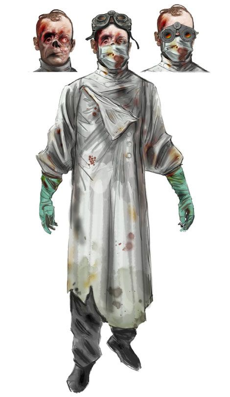
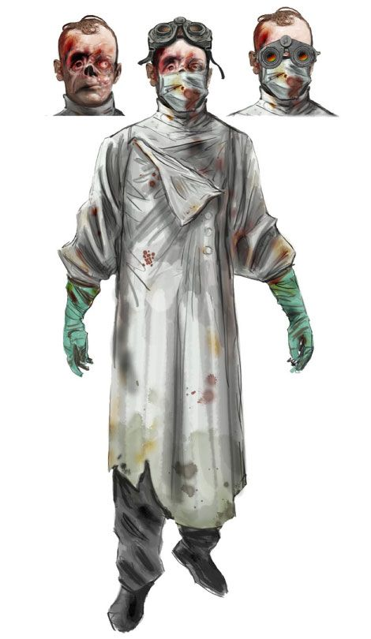

Нежить - то что осталось от когда-то процветающей, но уничтожевшей себя-же цивилизации. В ходе очередной войны людей с собственным существованием, упали первые ядерные ракеты, что словно цепная реакция при распаде атома, спровоцировала больше взрывов. Дворфы улетели искать новый дом в далёком космосе, люди погибли, и только оркам и гоблинам, имевшим иммутитет к радиации, было нормально на новой, выженной земле. Но в один момент, когда открылись эльфийские порталы, наконец-то официально явился Войд, который отлавливал души людей. Души, которые его не заинтересовали перерабатывались в энергию, а обладавшие нужными навыками и чертами либо перерождались уже в войде в виде демонов, либо воскрешались в полугнилом состоянии, в виде нежити. Нежить восстаёт только при условии подписания контракта с Войдом, которому нежить должна следовать. Однако условий этого контракта никто никогда не узнает, пока не нарушит или не выполнит его. Плоть у нежити сохранилась лишь частично: не везде, и гнилая, хотя иногда и сохраняется вполне неплохо. Любая часть тела, в особенности скелет, спокойно может быть механической. Распространены участки с полностью оголённым скелетом, в отдельных случаях плоти не оставалось вообще. Волосяной покров изредка сохраняется, или добавляется искуственно. Глаза у нежити бывают совершенно разные: их может не быть, они могут остаться полностью человеческими, очень сильно побледнеть, стать полностью чёрными или даже светиться. В остальном выглядят как привычная нежить или зомби. Создавая нежить, вы сами выбираете: сохранили ли вы свою память после смерти, или нет. Так же вы выбираете, привыкли ли вы к новому миру и его законам, или нет.
Рост: от 155 до 200 см
Продолжительность жизни: ?????. В листе персонажа пишется сумма биологического возраста до момента смерти с временем жизни в состоянии нежити.
Цвет кожи: варьируется
Глаза: варьируются. Могут быть полностью чёрные, могут отсутсвовать полностью, быть повреждёнными,
быть полностью человеческими или просто очень бледными, полностью чёрными или светящимися.
Размер: Средний. Рост от 165 до 195 см.
Вес: от 15 до 68 кг
Скорость: 30
| Умение | Описание |
|---|---|
Увеличение характеристик |
+1 ко всем характеристикам. |
Членораздельность |
Если вам отсоединили от тела Голову, Руку или Ногу, то вы можете поставить их на место, зафиксировав в изначальном месте на 6 секунд. По истечению этого времени, часть тела становится полностью функциональной. Вы можете безболезненно и мгновенно отсоединить от тела руку, ногу или голову. На расстонии до 120 фт от вашей головы, вы можете издалека управлять отделёнными частями тела, и чувствовать их окружение (например, вы можете отделить от тела свою голову, и пнуть её этим же телом, чтобы потом прибужать и посадить на место). Процесс отсоединения и присоединения частей тела не приносит вам никакой боли. Также вы можете свободно крутить голову на все 360 градусов. |
Человеческая изменчивость |
Вы получаете 1 дополнительное очко развития. Вы 2 получаете дополнительных ячейки на 1 уровне, и потом по 1 дополнительной ячейке на 3, 4, 6, и 7 уровнях. |
Гнилозубие |
Если ваши хиты опустились до нуля, но вы при этом не убиты, ваши хиты вместо этого опускаются до 1. Это умение нельзя использовать снова, пока вы не завершите Короткий или Продолжительный отдых. Также, в случае если вы умерли, вы можете 1 раз возродиться с 1 здоровьем. Возрождение занимает 2 часа. |
Homo Sapiens Sapiens Schizoidus |
Вы получаете 2 дополнительных очка развития. |
 
